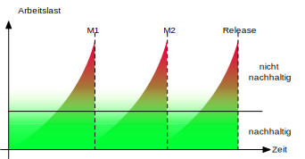

michael.eichberg@dhbw.de, Raum 149B
1.0
Das Produkt ist nicht greifbar (intangible)
Die Projektmanager können den Fortschritt nicht (leicht) sehen.
Sie müssen sich darauf verlassen, dass andere die zur Überprüfung des Fortschritts erforderliche Dokumentation erstellen bzw. funktionsfähige Software liefern.
Große Projekte sind oft "einmalige" Projekte. Das macht Schätzungen und Vorhersagen bzgl. der Entwicklungszeit und von Problemen (sehr) schwierig.
Schnelle technologische Veränderungen machen auch frühere Erfahrungen überflüssig.
Antrags- bzw. Angebotserstellung
D. h. Software-Projektmanager müssen effektive kommunizieren können - sowohl mündlich als auch schriftlich.
Projektplanung und Terminplanung
Projektkostenkalkulation
Projektüberwachung und -überprüfung
Personalauswahl und -bewertung
Berichtserstellung und Präsentationen
Ein zu Beginn erstellter Plan sollte als Motor für das Projekt dienen.
Dies sollte der bestmögliche Plan angesichts der verfügbaren Informationen sein.
Der Plan entwickelt sich mit dem Projektfortschritt weiter.
Projektplan
Qualitätssicherungsplan
Personalentwicklungsplan
Konfigurationsmanagementplan
Risikomanagementplan
Einführung
Zielsetzung des Projekts und seine Beschränkungen (Zeit, Budget,...).
Projektorganisation
Organisation der Beteiligten und ihrer Rollen.
Risikoanalyse
Projektrisiken mit Eintrittswahrscheinlichkeiten und Strategien zur Risikominderung.
Hardware- und Software-Ressourcenanforderungen
Die für die Durchführung des Projekts erforderliche Hardware und unterstützende Software.
Arbeitsaufteilung work breakdown
Legt die Aufteilung des Projekts in Aktivitäten fest und nennt die Meilensteine und Leistungen, die mit jeder Aktivität verbunden sind.
Projektzeitplan
Abhängigkeiten zwischen Aktivitäten, geschätzte Zeit, die zum Erreichen jedes Meilensteins benötigt wird, und die Zuordnung von Personen zu Aktivitäten.
Überwachungs- und Berichterstattungsmechanismen
Höchste Priorität ist es, den Kunden durch die frühzeitige und kontinuierliche Bereitstellung wertvoller Software zufrieden zu stellen.
Wir liefern häufig funktionierende Software (z. B. alle zwei Wochen).
Funktionierende Software ist der wichtigste Maßstab für den Fortschritt.
Wenn 30% der Funktionalität implementiert sind, sind 30% des Projekts abgeschlossen.
Kontinuierliches Augenmerk auf technische Exzellenz und gutes Design erhöht die Agilität.
Einfachheit - die Kunst, die Menge der nicht erledigten Arbeit zu maximieren - ist wesentlich.
Sich ändernde Anforderungen sind willkommen, auch wenn sie erst spät in der Entwicklung auftauchen; agile Prozesse nutzen den Wandel zum Wettbewerbsvorteil des Kunden.
In regelmäßigen Abständen reflektiert das Team, wie es effektiver werden kann, und passt sein Verhalten entsprechend an zwecks Prozessverbesserung.
Die besten Architekturen, Anforderungen und Entwürfe entstehen in selbstorganisierenden Teams.
Geschäftsleute und Entwickler müssen während des gesamten Projekts täglich zusammenarbeiten.
Bauen Sie Projekte um motivierte Personen herum auf; geben Sie ihnen das Umfeld und die Unterstützung, die sie brauchen, und vertrauen Sie ihnen, dass sie ihre Arbeit erledigen.
Agile Prozesse fördern eine nachhaltige Entwicklung; die Sponsoren, Entwickler und Benutzer sollten in der Lage sein, ein konstantes Tempo auf unbestimmte Zeit beizubehalten.
Behandlung von Problemen mit hohem Risiko und hohem Wert in frühen Iterationen.
Kontinuierliche Einbindung der Benutzer für Bewertung, Feedback und Anforderungen.
Aufbau einer kohärenten Kernarchitektur in frühen Iterationen.
Kontinuierliche Überprüfung der Qualität; frühes, häufiges und realistisches Testen.
Anwendung von Use Cases Anwendungsfälle (dt. unüblich) und User Stories Anwendererzählung (dt. unüblich), wo diese angebracht sind.
Visuelle Modellierung bei Bedarf.
Sorgfältige Verwaltung der Anforderungen.
Änderungsanfragen und Konfigurationsmanagement.
Extreme Programming ist eine Sammlung von einfachen, von einander abhängigen Praktiken.
User Stories
Die Anforderungen werden mit dem Kunden besprochen, aber nur ein paar Worte, die jeden an das Gespräch erinnern, werden zusammen mit einer Schätzung auf eine Karteikarte geschrieben.
Kurze Zyklen
Ausführbare Software wird z. B. alle zwei Wochen geliefert (eine Iteration).
Die gelieferte Software kann, muss aber nicht in Produktion gehen.
Iterationen sind zeitlich begrenzt.
Terminverschiebungen sind illegal; wenn nicht alle für die Iteration geplanten Aufgaben erledigt werden können, dann sind diese zu entfernen.
Zu Beginn jeder Iteration werden die User Stories oder auch Use Cases und ihre Prioritäten festgelegt. Der Kunde wählt die Benutzergeschichten aus, die er umgesetzt haben möchte.
Die User Stories werden in Tasks Aufgaben (dt. unüblich) aufgeteilt, deren Umsetzung zwischen 4 und 16 Stunden dauern sollte.
Die Anzahl der Geschichten wird durch das Budget begrenzt, das von den Entwicklern festgelegt wird.
Jeder Entwickler meldet sich für Aufgaben an.
Ein Entwickler kann eine beliebige Aufgabe wählen - auch wenn er kein Experte ist.
Die Reihenfolge der Stories innerhalb der Iteration ist eine technische Entscheidung.
Die Iteration endet zum festgelegten Datum (Timebox), auch wenn noch nicht alle Stories fertig sind.
Am Ende der Iteration:
Die Schätzungen für alle Stories werden zusammengezählt und die Geschwindigkeit für diese Iteration wird berechnet.
Die geplante Geschwindigkeit für jede Iteration entspricht der gemessenen Geschwindigkeit der vorherigen Iteration.
Entwickler und Kunden versuchen, alle wichtigen User Stories zu identifizieren.
Die Entwickler schätzen - relativ zueinander - die Storys, indem sie Story-Punkte zuweisen; eine Story mit doppelt so vielen Punkten wie eine andere Story wird voraussichtlich doppelt so lange für die Umsetzung benötigen.
Um die tatsächliche Größe zu ermitteln, benötigen wir die Geschwindigkeit velocity (Geschwindigkeit = benötigte Zeit in Std. pro Story-Punkt). Die Geschwindigkeit wird im Laufe des Projekts immer genauer; anfangs wird sie aufgrund von "Erfahrung" nur geschätzt. Alternative: man implementiert eine allererste User Story, um eine Grundlage zu haben.
Schätzen Sie den Aufwand für die Implementierung der folgenden Funktionalität:
Einlesen einer Typed Properties-Datei und Rückgabe einer Map, die die angegebenen und überprüften Eigenschaften enthält.
Jede Zeile ist entweder leer, beginnt mit einem #, wenn sie ein Kommentar ist, oder verwendet das folgende Muster: '['<TYPE>']'<KEY> '=' <VALUE> - Wenn beim Parsen einer Zeile ein Fehler auftritt, wird die Zeile ignoriert und das Parsen mit der nächsten Zeile fortgesetzt.
Nach dem Parsen der gesamten Datei wird eine Map mit den geprüften Eigenschaften zurückgegeben; alle Zeilen, die nicht geparst werden können oder deren Prüfung fehlgeschlagen ist, werden ebenfalls zurückgegeben.
Die Details der User Stories werden in Form von Akzeptanztests festgehalten. Akzeptanztests (in der Regel Blackbox-Tests) werden vor oder gleichzeitig mit der Implementierung einer User Story geschrieben. Sobald ein Akzeptanztest bestanden ist, wird er der Gruppe der bestandenen Akzeptanztests hinzugefügt und darf nie wieder fehlschlagen.
Code wird geschrieben, um fehlschlagende (Unit-)Tests zu beheben.
Eine (sehr) vollständige Sammlung von Testfällen erleichtert Refactorings und führt oft (implizit) zu weniger gekoppeltem Code.
(Der dt. Begriff Kontinuierliche Integration wird üblicherweise nicht verwendet.)
Die Programmierer checken ihren Code ein und integrieren ihn mehrmals am Tag; es wird eine nicht blockierende Versionskontrolle verwendet. Nach dem Einchecken wird das System gebaut und alle Tests (einschließlich der Akzeptanztests) werden durchgeführt.
Ein Tag
Einige Seiten erfordern ein Login; andere nicht.
Die Liste der Seiten, die ein Login erfordern, ist dynamisch.
Der Login ist nur einmal pro Session notwendig.
Einschränkung
Das System zeigt keine Popups, die als Werbepopups interpretiert werden könnten.
Login-Story - zwei Tage
Wenn ein Login erforderlich ist und die Seite den Nutzer nicht als Mitglied identifizieren kann, dann wird der Nutzer auf die Loginseite weitergeleitet.
Diese fragt dann nach dem Nutzernamen und Passwort und erläutert den Loginprozess und die Philosophie der Seite.
Login-Start
Lese cookie.
Falls gesetzt: zeige Bestätigung an und Option als jemand anderes einzuloggen.
Andernfalls leite auf Loginseite um.
Login
Lese Daten von HTML input.
Prüfe ob der Nutzer in der Datenbank mit dem angegebenen Namen und Passwort hinterlegt ist. Falls nicht erfolgreiche umleiten auf Startseite mit entsprechender Fehlermeldung.
Speichere Cookie.
Die Geschichten müssen für den Kunden verständlich sein.
Jede Geschichte muss dem Kunden einen Mehrwert bieten.
Stories müssen so groß (klein) sein, dass man in jeder Iteration ein paar von ihnen erstellen kann
Geschichten sollten unabhängig voneinander sein
Jede Geschichte muss testbar sein
Unabhängig - Die User Story sollte in sich geschlossen sein, so dass keine Abhängigkeit von einer anderen User Story besteht.
Verhandlungsfähig - User Stories können, bis sie Teil eines Sprints sind, jederzeit geändert und umgeschrieben werden.
Wertvoll - eine User Story muss dem Endbenutzer einen Wert liefern.
Abschätzbar - Sie müssen immer in der Lage sein, den Umfang einer User Story abzuschätzen.
Angemessen dimensioniert oder klein - User Stories sollten nicht so groß sein, dass eine Planung/Aufgabe/Priorisierung mit einem gewissen Grad an Sicherheit unmöglich wird.
Die User Story oder die zugehörige Beschreibung muss die notwendigen Informationen liefern, um die Entwicklung von Tests zu ermöglichen.
ID |
2 |
|
Name |
Admin-Login |
|
Beschreibung |
Als Administrator*in muss ich mich am System mittels Benutzername und Passwort authentifizieren können, um Änderungen vornehmen zu können. |
|
„Mit allen abzustimmen“ |
Akzeptanzkriterium |
Der Dialog zum Einloggen wird korrekt angezeigt und es ist möglich sich als Administrator*in zu authentifizieren. Ungültige Eingaben werden ignoriert und normale Nutzer*innen erhalten nicht die Rolle Administrator. |
Beim Anlegen |
Geschätzter Aufwand in Story Points (SPs) |
3 |
Bei Iterationsstart festzulegen |
Entwickler*in |
Michaela Müller |
Umgesetzt in Iteration |
2 |
|
Am Iterationsende |
Tatsächlicher Aufwand (Std.) |
12 |
Velocity (SPs / Std.) |
0,25 |
|
Bemerkungen |
/ |
User Stories
Format
Ein bewährtes Format für User Stories ist: „Als <Benutzerrolle> will ich <das Ziel> [, so dass <Grund für das Ziel>]“.
Wichtig ist, dass der Inhalt von jedem verstanden wird und jeder eine Vorstellung davon hat, was zu tun ist.
Erfassung
Im Allgemeinen bedarf die Erfassung von User Stories keiner besonderen Werkzeuge und die Verwendung von - zum Beispiel - Google Docs ist ausreichend. Es gibt jedoch im Internet auch (freie) Werkzeuge, die verwendet werden können (zum Beispiel: Redmine - http://www.redmine.org/).
Aufteilung
Die Aufteilung der User Story in Tasks liegt in der Verantwortung der Gruppe.
Geschätzter Aufwand
Basis ist die erwartete Komplexität im Vergleich zu anderen User Stories; insbesondere im Vergleich zu bereits implementierten User Stories. Es ist wichtig, dass der geschätzte Aufwand aktuell ist; sollte zwischen der ersten Schätzung des Aufwands und dem Zeitpunkt an dem die User Story umgesetzt werden soll, mehrere Iterationen liegen, so ist es ggf. sinnvoll die User Story noch einmal zu schätzen!
Grad der Konsistenz zwischen Spezifikation und Programm bzw. als Grad der Erfüllung der Benutzererwartung durch ein Programm (d.h. ohne Spezifikation ist keine Korrektheit nachweisbar).
Alle geforderten Funktionen sind realisiert.
Eigenschaft eines Systems weder Menschen, noch Sachen oder die Umwelt zu gefährden.
Eigenschaft eines Systems Informationsverluste und unbefugten Datenzugriff zu verhindern.
Die Wahrscheinlichkeit des ausfallfreien Betriebs der (in diesem Kontext) Software über einen bestimmten Zeitraum bei einer definierten Betriebsweise.
Eigenschaft zu einem gegebenen Zeitpunkt funktionstüchtig zu sein.
Im Wesentlichen eine Eigenschaft der Spezifikation. Resultiert im Wesentlichen aus der korrekten Umsetzung einer Spezifikation, die auch ungewöhnliche Betriebssituationen erfasst.
Wieso ist das Qualitätsziel für das Projekt von Bedeutung?
Welche anderen Qualitätsziele sind für das Projekt von Bedeutung?
Ist dieses Qualitätsziel wichtiger als die anderen bzw. ist es das Wichtigste? Haben wir die wichtigsten Qualitätsziele identifiziert?
Ggf. alle QS Ziele in Hinblick auf die Bedeutung für das Projekt bewerten und in Reihenfolge bringen.
Welche QS-Maßnahmen können durchgeführt werden, die der Erreichung des QS-Ziels direkt dienlich sind?
Wer (Person oder IT-System) führt die Maßnahme durch?
Wann wird die Maßnahme durchgeführt? (Ist die Häufigkeit der Durchführung ausreichend, um das Qualitätsziel mit großer Sicherheit zu erreichen?)
Wie ist die Maßnahme ausgestaltet bzw. was wird getan?
Wie kann objektiv festgestellt werden, dass das Qualitätsziel erreicht wurde
Welcher Maßstab kann anlegt werden, um die Ziel-Erreichung zu messen?
Zur Sicherstellung der Benutzerfreundlichkeit sind häufig Benutzerstudien notwendig.
Objektive Maßstäbe sind z.B. die Anzahl der Fehler, die ein Benutzer macht, die Zeit, die ein Benutzer benötigt, um eine Aufgabe zu erledigen, oder die Anzahl der Aufgaben, die ein Benutzer in einer bestimmten Zeit erledigen kann.